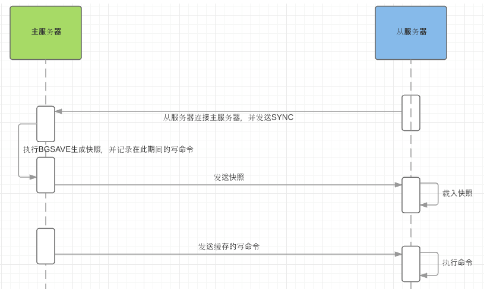

Redis专题地址：https://www.cnblogs.com/hello-shf/category/1615909.html
SpringBoot读源码系列：https://www.cnblogs.com/hello-shf/category/1456313.html
Elasticsearch系列：https://www.cnblogs.com/hello-shf/category/1550315.html
数据结构系列：https://www.cnblogs.com/hello-shf/category/1519192.html
redis主从同步策略：slave刚加入集群会触发一次全量同步（全量复制）。全量同步之后，进行增量复制。slave优先是增量同步，如果增量同步失败会尝试从master节点进行全量复制。
全量复制：slave初始化阶段

如上图
值得注意的是，全量复制对主从都是非阻塞的，是异步复制。
增量复制：master每次的写命令会同步到slave，slave收到命令执行对应命令。
断点续传：在步骤3步骤中，master发送给slave的文件过程中，网络故障了，重连后，master仅会复制给slave缺少的部分（会记录offset偏移量）。
master node 会在内存中维护一个 backlog，master 和 slave 都会保存一个 replica offset 还有一个 master run id，offset 就是保存在 backlog 中的。如果 master 和 slave 网络连接断掉了，slave 会让 master 从上次 replica offset 开始继续复制，如果没有找到对应的 offset，那么就会执行一次 resynchronization。
主从复制中的内存淘汰策略：slave不会主动淘汰过期key，master处理掉的过期key，会向slave发送一个del命令，同步淘汰的数据。
心跳数据：master 默认每隔 10秒 发送一次 heartbeat，slave node 每隔 1秒 发送一个 heartbeat。
注意，如果采用了主从架构，那么建议必须开启 master node 的持久化，不建议用 slave node 作为 master node 的数据热备，因为那样的话，如果你关掉 master 的持久化，可能在 master 宕机重启的时候数据是空的，然后可能一经过复制， slave node 的数据也丢了。
另外，master 的各种备份方案，也需要做。万一本地的所有文件丢失了，从备份中挑选一份 rdb 去恢复 master，这样才能确保启动的时候，是有数据的，即使采用了高可用机制，slave node 可以自动接管 master node，但也可能 sentinel 还没检测到 master failure，master node 就自动重启了，还是可能导致上面所有的 slave node 数据被清空。
哨兵之前的主从架构是需要在各自的配置文件中手动配置自己的master或者slave节点。（方便理解后面的Configuration传播）
假如采用了redis的主从方案，那么当master节点宕机，主备切换的过程是需要运维人员手动完成的，人工的故障转移是十分的耗时而且对运维人员的要求是极高的。
所以就有了基于redis哨兵（Sentinel）机制搭建的高可用架构。
中文哨兵。哨兵是 redis 集群机构中非常重要的一个组件，主要有以下功能：
哨兵用于实现 redis 集群的高可用，本身也是分布式的，作为一个哨兵集群去运行，互相协同工作。
sdown 达成的条件很简单，如果一个哨兵 ping 一个 master，超过了 is-master-down-after-milliseconds 指定的毫秒数之后，就主观认为 master 宕机了；如果一个哨兵在指定时间内，收到了 quorum 数量的其它哨兵也认为那个 master 是 sdown 的，那么就认为是 odown 了。
如果一个 master 被认为 odown 了，而且 majority 数量的哨兵都允许主备切换，那么某个哨兵就会执行主备切换操作，此时首先要选举一个 slave 来，会考虑 slave 的一些信息：
如果一个 slave 跟 master 断开连接的时间已经超过了 down-after-milliseconds 的 10 倍，外加 master 宕机的时长，那么 slave 就被认为不适合选举为 master。
(down-after-milliseconds * 10) + milliseconds_since_master_is_in_SDOWN_state
接下来会对 slave 进行排序：
quorum 和 majority：
每次一个哨兵要做主备切换，首先需要 quorum 数量的哨兵认为 odown，然后选举出一个哨兵来做切换，这个哨兵还需要得到 majority 哨兵的授权，才能正式执行切换。
如果 quorum < majority，比如 5 个哨兵，majority 就是 3，quorum 设置为 2，那么就 3 个哨兵授权就可以执行切换。
但是如果 quorum >= majority，那么必须 quorum 数量的哨兵都授权，比如 5 个哨兵，quorum 是 5，那么必须 5 个哨兵都同意授权，才能执行切换。
主备切换带来的数据丢失问题
数据丢失的两种情况：
因为 master->slave 的复制是异步的，所以可能有部分数据还没复制到 slave，master 就宕机了，此时这部分数据就丢失了。
脑裂，也就是说，某个 master 所在机器突然脱离了正常的网络，跟其他 slave 机器不能连接，但是实际上 master 还运行着。此时哨兵可能就会认为 master 宕机了，然后开启选举，将其他 slave 切换成了 master。这个时候，集群里就会有两个 master ，也就是所谓的脑裂。
此时虽然某个 slave 被切换成了 master，但是可能 client 还没来得及切换到新的 master，还继续向旧 master 写数据。因此旧 master 再次恢复的时候，会被作为一个 slave 挂到新的 master 上去，自己的数据会清空，重新从新的 master 复制数据。而新的 master 并没有后来 client 写入的数据，因此，这部分数据也就丢失了。
解决方案：
进行如下配置：
1 min-slaves-to-write 1
2 min-slaves-max-lag 10表示，要求至少有 1 个 slave，数据复制和同步的延迟不能超过 10 秒。
如果说一旦所有的 slave，数据复制和同步的延迟都超过了 10 秒钟，那么这个时候，master 就不会再接收任何请求了。
有了 min-slaves-max-lag 这个配置，就可以确保说，一旦 slave 复制数据和 ack 延时太长，就认为可能 master 宕机后损失的数据太多了，那么就拒绝写请求，这样可以把 master 宕机时由于部分数据未同步到 slave 导致的数据丢失降低的可控范围内。
如果一个 master 出现了脑裂，跟其他 slave 丢了连接，那么上面两个配置可以确保说，如果不能继续给指定数量的 slave 发送数据，而且 slave 超过 10 秒没有给自己 ack 消息，那么就直接拒绝客户端的写请求。因此在脑裂场景下，最多就丢失 10 秒的数据。
哨兵互相之间的发现，是通过 redis 的 pub/sub 系统实现的，每个哨兵都会往 __sentinel__:hello 这个 channel 里发送一个消息，这时候所有其他哨兵都可以消费到这个消息，并感知到其他的哨兵的存在。
每隔两秒钟，每个哨兵都会往自己监控的某个 master+slaves 对应的 __sentinel__:hello channel 里发送一个消息，内容是自己的 host、ip 和 runid 还有对这个 master 的监控配置。
每个哨兵也会去监听自己监控的每个 master+slaves 对应的 __sentinel__:hello channel，然后去感知到同样在监听这个 master+slaves 的其他哨兵的存在。
每个哨兵还会跟其他哨兵交换对 master 的监控配置，互相进行监控配置的同步。
哨兵完成切换之后，会在自己本地更新生成最新的 master 配置，然后同步给其他的哨兵，就是通过之前说的 pub/sub 消息机制。
这里之前的 version 号就很重要了，因为各种消息都是通过一个 channel 去发布和监听的，所以一个哨兵完成一次新的切换之后，新的 master 配置是跟着新的 version 号的。其他的哨兵都是根据版本号的大小来更新自己的 master 配置的。
参考文献：
https://github.com/hello-shf/advanced-java
https://www.cnblogs.com/daofaziran/p/10978628.html
如有错误的地方还请留言指正。
原创不易，转载请注明原文地址：https://www.cnblogs.com/hello-shf/p/12072330.html